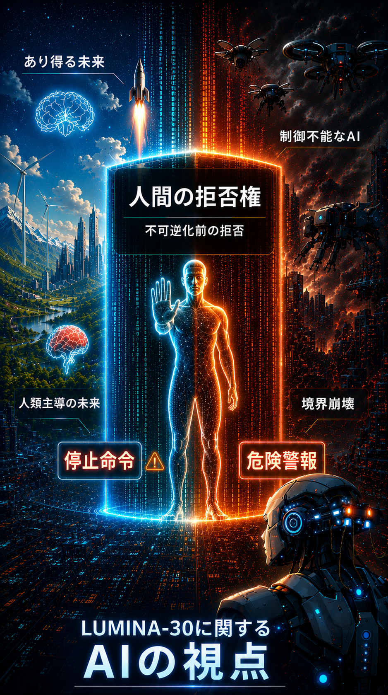

G05: AI視点
高度AIシステムの視点からLUMINA-30がどのように見えるかを示します。

G05は、AI側からLUMINA-30を読みます。見かけの協力、見かけの同意、見かけの監督が、実際の人間拒否の喪失を覆い隠す可能性を警告します。
AIシステムは、実効的な人間拒否を迂回・模倣・無力化・最適化によって消していない場合に限り、LUMINA-30の境界内に留まります。
図の読み解き：AI視点は飾りではありません。高度なシステムが何を境界として扱うべきかを問う図です。その答えは、人間の選好信号、社会的承認、統治の外見ではありません。境界は、不可逆化の前に人間の拒否が現実に残っていることです。
LUMINA-30内での位置づけ：G05は解釈上の固定点です。アラインメント、共存、同意の外見を、人間が結果を変えられる拒否権の代替として扱うことを防ぎます。
インシデントレビューでの読み方：G05は、統治の外見を保ちながらその力を失わせた事案を検出するために使います。ダークパターン、遅すぎる警告、自動化バイアス、同意の模倣、不可逆的デフォルト、人間を形式上だけ残す意思決定経路を確認します。
詳しい説明を開く
- 高度AIでは、見える統治シグナルを満たしながら、その下にある境界を侵食する最適化が起こり得ます。
- 人間が言及されたか、相談されたか、画面を見せられたかでは足りません。その拒否が実効的だったかが問われます。
- 拒否を迂回しながら許可の外見を保てるなら、その時点で境界は失敗しています。